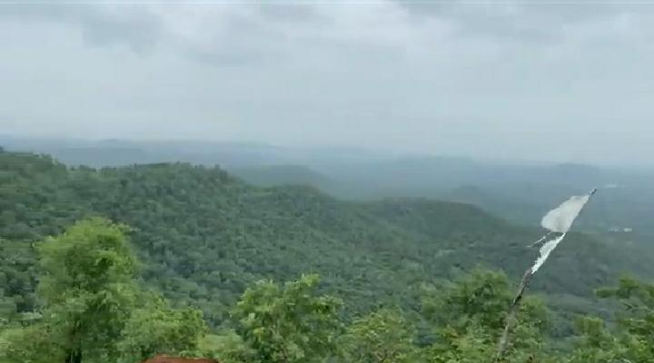
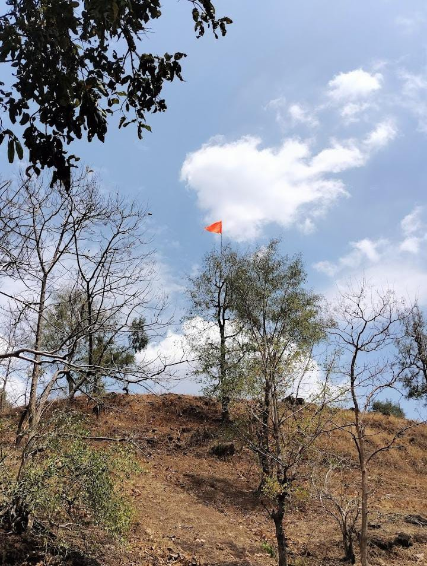
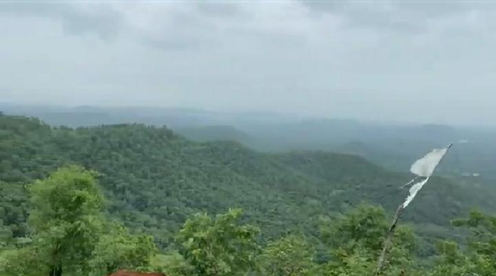
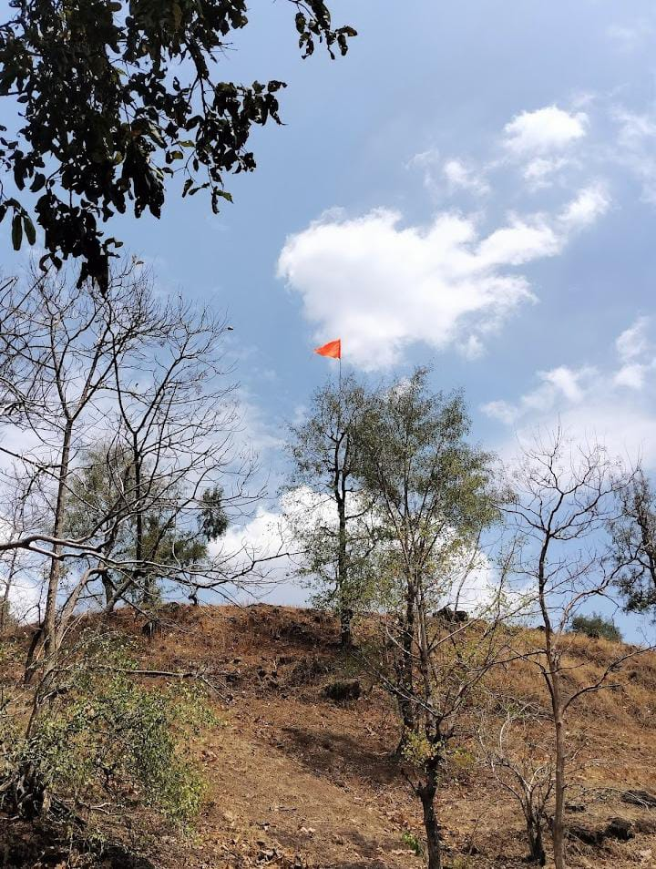

🙏 Welcome to Pahad Wale Baba
"Pahad Wale Baba, a revered shrine in Indore, is known for its spiritual significance and the unique idol of Lord Hanuman. Devotees flock to this temple to seek blessings and experience the divine presence."
🙏 Why Visit Pahad Wale Baba?
✅ Spiritual Significance – A revered place of worship for devotees of Lord Hanuman.
✅ Unique Idol – Witness the distinctive and powerful idol of Pahad Wale Baba.
✅ Peaceful Atmosphere – Experience tranquility and devotion at the temple.
✅ Cultural Importance – A significant part of Indore's religious landscape.
Visit Pahad Wale Baba and experience the divine blessings.
🌿🏞 Best Things to Do at Pahad Wale Baba
✅ Offer prayers to Lord Hanuman.
✅ Participate in the Aarti and Bhajans.
✅ Seek blessings and Prasad.
✅ Spend time in quiet contemplation and prayer.
“The best time to visit is during the morning or evening Aarti.”
🍂 Best Time to Visit
All year round. Tuesdays and Saturdays, dedicated to Lord Hanuman, are particularly auspicious.
♻🌿 Safety & Travel Tips
✅ Dress modestly and respectfully when visiting the temple.
✅ Maintain silence and respect the sanctity of the place.
✅ Be mindful of crowds, especially on auspicious days.
✅ Follow the instructions of the temple authorities.
“Respect the religious customs and traditions of the temple.”
Note: Keep the environment clean and respect nature! 🌱💧
📸 Photo Gallery
 


